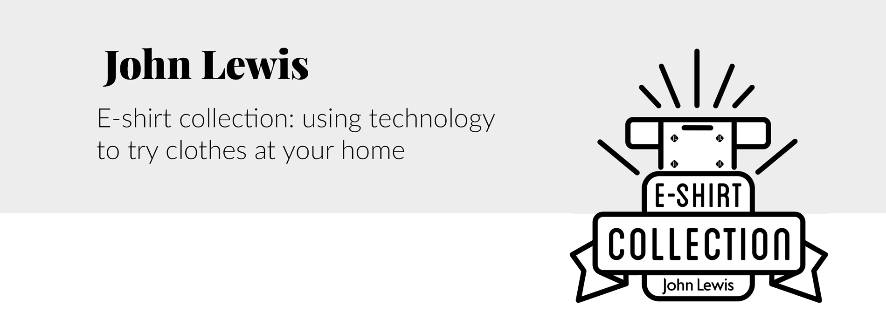
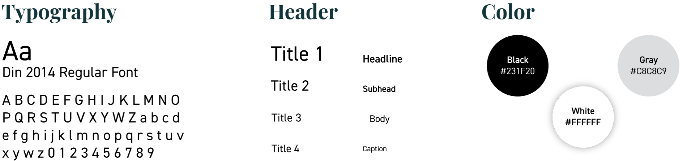

<!DOCTYPE html>
<html lang="en">
    <head>

        <meta charset="utf-8">
        <link rel="stylesheet" href="css/reset.css">
        <link rel="stylesheet" href="css/style.css">
        
        <meta name="viewport" content="width=device-width, initial-scale=1.0">

        <title>Marilia GilP - Interactive Media Designer</title>

    </head>

    <body>
        <div class="wrapper">

            <header>
                <div class="top">
                    <a href="index.html"></a>  
                    <div class="subtitle">Interactive media designer</div>
                </div>

                <!-- Start menu area -->
                <div class="topnav" id="myTopnav">
                    <nav>
                        <a href="index.html" class="active">Works</a>
                        <a href="about.html">About</a>
                        <a href="javascript:void(0);" class="icon" onclick="myFunction()">
                            </a>
                    </nav>
                </div>

            </header>

            <main>

                <div class="workabout">
                    
                </div>

                
                <div class="worktext">
                    <p> <a href="https://www.johnlewis.com/" target="_blank">John Lewis & Partners</a>  (formerly John Lewis) is a brand of high-end department stores and online shopping operating in Great Britain, Ireland and Australia. The brand exists since 1929 and it's constantly faces the challenge of keeping relevant for its consuming public</p>

                    <p>Many people feel intimidated by department stores because there are many options to choose from, a limited number of pieces to try and is a time consuming process. The brief was design a service to bring John Lewis into the lives of time-short urbanites, and bring them to the brand.</p>

                    <br>
                    <br>
                    
                    <h3>The idea</h3>
                    <hr>

                    <p>Using motion capture and augmented reality, the ideia is to provide John Lewis t-shirts with position markers so the UI in the app can render the colecction directly to the persson's body using it's cellphone camera to try new John Lewis collection virtually.</p>
                
                    <br>
                    <br>

                    <h3>How it works</h3>
                    <hr>
                    
                    <br>
                    <br>
                    <p> The costumer takes the e-shirt in anyof John Lewis distribution spots. Put the e-shirt, download John Lewis App, turn on the camera as it would taking a selfie and let the tracker technology scan John Lewis markers. Then, the person will be able to try any clothes of its collection as if the user were really wearing the clothes.</p>

                    <p>If the customer wants to buy something they tried, just make the payment through the app and choose to receive in your home or pick it up in a John Lewis store.</p>

                    <br>
                    <br>

                    <h3>Visual concept</h3>
                    <hr>

                    <p>To support the ideia we developed the <b>logo</b>, a <b>prototype for the app</b>, <b>two posters</b> and a <b>video explaing the concept</b>.</p>

                    
                    <br>
                    <br>
                    <br>
                    
                    

                </div>

                <div class="workabout">
                    
                    <div class="photo-grid">
                        
                        <a href="#img1"></a>

                        <a href="#_" class="lightbox" id="img1"></a>
                        

                        <a href="#img2"></a>

                        <a href="#_" class="lightbox" id="img2"></a>
                        
                    </div>
                </div>

                <div class="worktext">

                    <div class="video-container"><iframe width="853" height="480" src="https://www.youtube.com/embed/O_iVH68LV4I" allow="accelerometer; autoplay; encrypted-media; gyroscope; picture-in-picture" allowfullscreen></iframe></div>
                    <br>

                </div>

                <div class="worktext">
                    <h2>Check more works:</h2>
                    <ul>
                        <li><a href="index.html">All</a></li>
                        <li><a href="works-cbeats.html">CB Eats app</a></li>
                        <li><a href="works-jl-tshirt.html" class="active">John Lewis e-shirt</a></li>
                        <li><a href="works-linkedin.html">Linkedin Job Seeker</a></li>
                        <li><a href="works-calligraphy.html">Calligraphy</a></li>
                    </ul>
                </div>
            
            </main>

            <footer>

                <!-- Start decoration footer area -->
                <div class="footer-area">
                    
                    <div class="social-icons">
                        <a href="mailto:mariliagilp@gmail.com" target=”_blank”></a>
                        <a href="https://www.linkedin.com/in/mariliagilp/" target=”_blank”></a>
                        <a href="https://www.instagram.com/mariliagilp/" target=”_blank”></a>
                    </div>

                    <div class="copyright">&copy; </div>
                </div> 
                <!-- End decoration footer area-->

            </footer>

        </div>
        <script>
            // Java Script for Menu 
            function myFunction() {
              var x = document.getElementById("myTopnav");
              if (x.className === "topnav") {
                x.className += " responsive";
              } else {
                x.className = "topnav";
              }
            }

        </script>
</body>
</html>